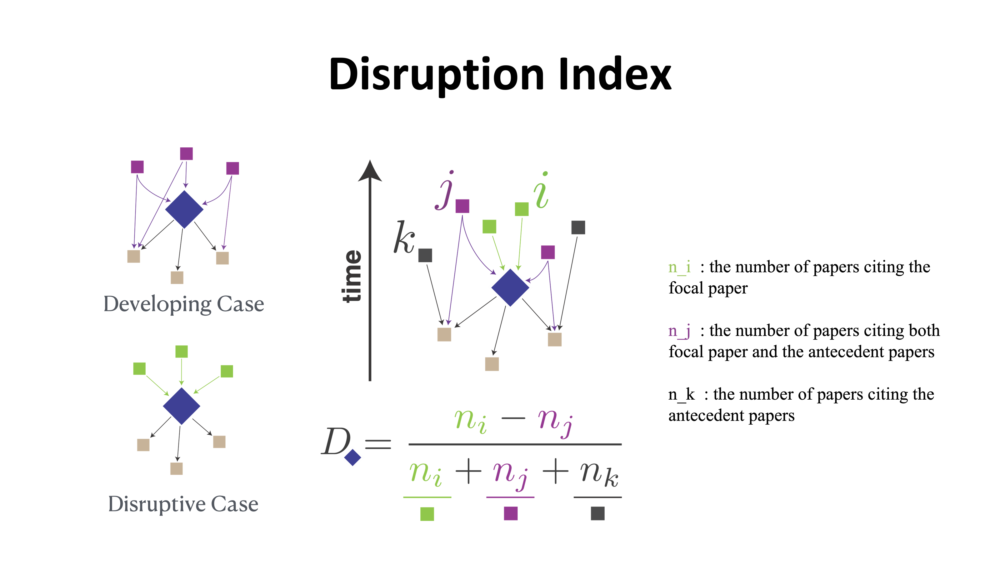
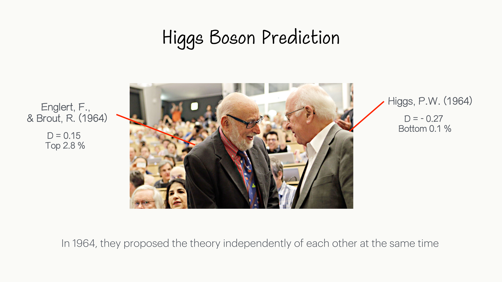
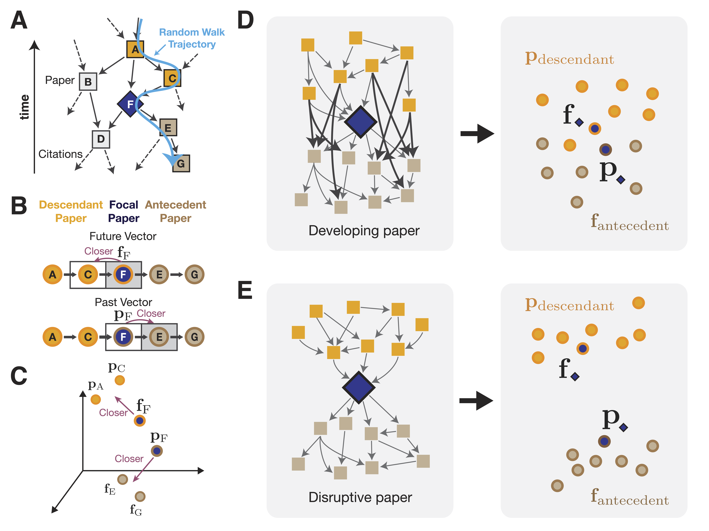
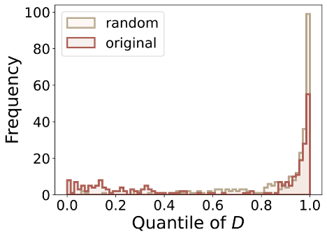

Progress in science and technology is punctuated by disruptive innovation and breakthroughs. To understand disruptive innovations and their drivers, the ability to operationalize and estimate "disruptiveness" is critical. Yet, this task remains difficult because scientific influence propagates through both direct and indirect citation paths, and discoveries are often fragmented across multiple papers. Here, we introduce an embedding-based metric of disruptiveness. When applied to large-scale publication data, the measure not only reliably identifies canonical breakthroughs, such as Nobel Prize-winning papers, but also discovers simultaneous disruptions that eluded standard approaches. By enabling more robust identification of disruptive innovations and simultaneous discoveries, our method facilitates more accurate attribution of transformative contributions while providing insights into the mechanisms driving scientific breakthroughs.
• • •
Why measuring disruption matters
Science is not a static body of knowledge but a dynamic system, continuously reshaped as new discoveries challenge established paradigms. Some contributions maintain an existing trajectory — consolidating work. Others redirect it toward unforeseen lines of inquiry — disruptive work.
To study this systematically — what drives disruptive work, how it reshapes a field, who produces it and under what conditions — we need a way to measure it. Without a reliable quantitative signal, questions about innovation remain impressionistic.
The Disruption Index (\(D\)), introduced by Funk & Owen-Smith and popularized by Wu, Wang & Evans, has become the most widely adopted measure of scientific disruptiveness, used across thousands of studies in scientometrics, management science, and science policy.
The idea behind it is simple but powerful. A paper sits between its past (the works it cites) and its future (the works that cite it). If a paper is disruptive, it bends the stream of knowledge — future work moves in a new direction and gradually loses touch with the paper's references. As a result, descendants cite the focal paper but no longer cite its references. Conversely, if a paper is consolidating, the future keeps citing both the paper and its references, reinforcing the existing trajectory.

The intuition behind the Disruption Index.
A disruptive paper redirects the flow of citations: its descendants no longer look back to its antecedents. A developing paper reinforces the existing stream: descendants continue to cite both the paper and its references.
The disruption index distills this into a single number: $$D = \frac{n_i - n_j}{n_i + n_j + n_k}$$ where \(n_i\) counts papers that cite only the focal work, \(n_j\) counts those that cite both the focal work and its references, and \(n_k\) counts those that skip the focal work entirely. A score near \(+1\) means the paper broke the chain; a score near \(-1\) means it strengthened it.
This simple measure has enabled a wave of large-scale findings about how innovation works: that small teams disrupt while large teams develop [1], that papers and patents are becoming less disruptive over time [2], and that remote collaboration fuses fewer breakthroughs [3].
But scientific influence rarely stays local. A breakthrough can ripple through chains of citations that span decades and disciplines. A discovery can be fragmented across multiple papers, or made independently by separate teams who then cite each other. These higher-order structures — indirect paths, long-range dependencies, and distributed discoveries — are invisible to any measure that looks only at a paper's immediate neighbors.
We build on the disruption index's foundation with an embedding-based approach designed to complement it: one that captures influence propagating through the full network, and that naturally handles a phenomenon local measures are not designed to address — simultaneous discoveries.
Motivating example: the Higgs boson
In 1964, two papers independently proposed the same idea: a mechanism that gives mass to elementary particles. François Englert and Robert Brout published first; weeks later, Peter Higgs published an independent formulation. Both papers described the same physics. Both led to the 2013 Nobel Prize.
Yet the disruption index assigns them strikingly different scores: \(D = 0.15\) for Englert & Brout, but \(D = -0.27\) for Higgs. One lands in the top 2.8%; the other in the bottom 0.1%. The same discovery, measured as disruptive on one side and consolidating on the other.

Same discovery, opposite scores.
Englert & Brout (1964) and Higgs (1964) independently proposed the same mechanism, shared the 2013 Nobel Prize, yet receive very different disruption index scores. The difference arises from local citation patterns — not from any real difference in their contribution.
This is not a flaw of the disruption index per se — it's a consequence of measuring disruption from local citation topology alone. When two teams independently make the same breakthrough, their mutual citations and the small differences in who cites whom can swing the score dramatically. Merton's theory of multiple discoveries suggests that such simultaneous, independent advances are the norm rather than the exception — Newton and Leibniz, Darwin and Wallace, and as we will show, hundreds of pairs across modern science.
These observations motivate an approach that leverages the full network structure — including indirect paths and higher-order relationships — to provide a complementary perspective on scientific disruptiveness.
• • •
An embedding-based approach
We introduce an embedding-based measure that captures the extent to which a scientific work redirects the research trajectory. Our approach embeds each paper in a high-dimensional space reflecting its direct and indirect connections to prior and subsequent work. Instead of counting immediate neighbors, we learn vector representations from the full citation network. The key insight: every paper plays two roles.
1
Walk the network. Random walks traverse the citation graph, capturing both local and long-range structure through indirect citation paths.
2
Learn two vectors per paper. A future vector captures how a paper influences its descendants. A past vector captures how it relates to its antecedents.
3
Measure the gap. The cosine distance between a paper's future and past vectors is its Embedding Disruptiveness Measure (EDM). Big gap = disruptive. Small gap = consolidating.

How EDM works.
(A) Random walks traverse the citation network.
(B) A directional skip-gram learns future and past vectors from walk sequences.
(C) In embedding space, disruptive papers have distant future and past vectors.
(D) A developing paper: future and past stay close — descendants follow the same references.
(E) A disruptive paper: future and past diverge — descendants break new ground.
The key trick: a directional skip-gram
Standard skip-gram models (like Word2Vec or node2vec) learn a single vector per node. But citation networks are directed — being cited is fundamentally different from citing. We need each paper to have two separate representations.
Our skip-gram objective is designed so that:
The directional constraint
When a random walk moves forward in time (from a paper to its descendants), the model trains the paper's future vector (\(\mathbf{f}\)) to predict the past vectors (\(\mathbf{p}\)) of the papers it reaches.
When a walk moves backward (from a paper to its antecedents), the model trains the paper's past vector (\(\mathbf{p}\)) to predict the future vectors (\(\mathbf{f}\)) of the papers it reaches.
Concretely, for a random walk starting from paper s, the objective is:
where \(v_t\) is the paper at position \(t\) in the \(r\)-th walk from \(s\), and the prediction window \(w\) determines whether we look forward (future) or backward (past) in the walk.
This is what makes the two vectors learn different things: the future vector learns to predict where knowledge goes, and the past vector learns to predict where knowledge came from. The same paper, two perspectives.
Mathematical connection to the disruption index
The key insight is what the future vector actually converges to. We show that after training, the future vector \(\mathbf{f}_i\) aligns with the mean direction of its descendants' past vectors:
In other words, a paper's future vector is a summary of what its descendants look back at. This is where the connection to disruption becomes geometric:
Consolidating paper: Descendants keep citing the same antecedents as the focal paper. Their past vectors resemble the focal paper's past vector, so \(\mathbf{u}_i \approx \mathbf{p}_i\) — the future and past vectors align.
Disruptive paper: Descendants break from the focal paper's antecedents and head in a new direction. Their past vectors diverge from the focal paper's past vector, so \(\mathbf{u}_i \neq \mathbf{p}_i\) — the future and past vectors point apart.
The EDM formula captures exactly this:
$$\text{EDM} = 1 - \cos(\mathbf{f}, \mathbf{p})$$
When \(\mathbf{f} \approx \mathbf{p}\), cosine similarity is high and EDM is near 0 (consolidating). When \(\mathbf{f}\) and \(\mathbf{p}\) diverge, EDM rises toward 2 (disruptive). Unlike the original disruption index which counts citations among immediate neighbors, EDM encodes this through the entire network's geometry.
• • •
Does it actually work?
We tested EDM on 54.9 million papers from Web of Science, 644K papers from APS, and 7.4 million patents. We validated against Nobel Prize papers, APS milestone papers, and government-funded patents.
EDM outperforms the disruption index across the board.
(A) EDM produces a smooth distribution; D clusters at discrete values.
(B) Milestone and Nobel Prize papers rank higher under EDM.
(C) Individual paper rankings are more stable across randomized networks.
(D) Firth's logistic regression: EDM is statistically significant; \(D\) is not.
(E) Five landmark simultaneous discoveries — both co-discoverers score high on EDM, while \(D\) penalizes them.
Disruption Index
EDM
Distribution
Discrete, clusters at \(0, 0.5, 1\)
Smooth, continuous
Scope
Local (immediate neighbors)
Global (full network structure)
Simultaneous discoveries
Not designed to capture
Captured via shared future vectors
APS Milestone papers
OR not significant
OR \(= 1.23, p < 0.001\)
Nobel Prize papers
OR not significant
OR \(= 1.34, p < 0.001\)
Revisiting the Higgs boson
Remember our motivating example? The disruption index gave Englert & Brout and Higgs opposite scores for the same discovery. EDM tells a different story:
The local measure splits the same discovery into "disruptive" and "consolidating." The embedding-based measure recognizes both papers for what they are: equally transformative contributions that redirected the field.
The unit of discovery is not always a single paper
A closer look at APS milestone papers with low \(D\) scores reveals that many are not genuinely consolidating. Of 57 milestone papers in the bottom 10% of \(D\), we manually examined each one: 25 (43.9%) had low scores driven by citation artifacts — mutual citations among simultaneous discoverers, or internal citations within multi-part paper series by the same team. The unit of discovery, in these cases, was not a single paper but a cluster of related publications.
When we remove these cases, the distribution of \(D\) for milestone papers shifts dramatically — the puzzling concentration at the low end largely disappears.

Milestone papers after removing citation artifacts.
The bimodal pile-up at low \(D\) (visible in Figure 3B) largely vanishes once simultaneous and collective discoveries are accounted for. The remaining milestone papers cluster toward high \(D\), as expected.
This does not diminish the disruption index — it reinforces its core insight. It simply reminds us that simultaneous discoveries and collective publications are more common than we might assume, and that the natural unit of a "discovery" does not always map neatly onto a single paper.
Where \(D\) and EDM disagree
We examined the papers with the largest discrepancies between \(D\) and \(\Delta\) — papers where the disruption index and EDM disagree the most. An intriguing pattern emerged: they were all simultaneous discoveries.
Paper
Year
\(D\) quantile
\(\Delta\) quantile
Simultaneous Discovery Pair
Kohn & Sham — Self-consistent equations including exchange and correlation effects
1965
0.001
0.959
Hohenberg & Kohn (1964)
Higgs — Broken symmetries and the masses of gauge bosons
Augustin et al. — Discovery of a narrow resonance in e+e- annihilation
1974
0.000
0.952
Abrams et al. (1974)
Weinberg — A model of leptons
1967
0.013
0.956
Glashow (1961)
Gross & Wilczek — Ultraviolet behavior of non-abelian gauge theories
1973
0.004
0.946
Politzer (1973)
Politzer — Reliable perturbative results for strong interactions?
1973
0.002
0.942
Gross & Wilczek (1973)
Baltimore — Viral RNA-dependent DNA polymerase
1970
0.000
0.947
Temin & Mizutani (1970)
Temin & Mizutani — RNA-dependent DNA polymerase in virions of Rous sarcoma virus
1970
0.000
0.945
Baltimore (1970)
Bloom et al. — High-energy inelastic e-p scattering at 6° and 10°
1969
0.013
0.951
Breidenbach et al. (1969)
Breidenbach et al. — Observed behavior of highly inelastic electron-proton scattering
1969
0.005
0.942
Bloom et al. (1969)
Abrams et al. — Discovery of a second narrow resonance in e+e- annihilation
1974
0.001
0.936
Augustin et al. (1974)
Papers with the largest discrepancy between disruption index (\(D\)) and embedding disruptiveness (\(\Delta\)) quantiles. \(D\) quantiles near zero reflect mutual citations between co-discoverers; \(\Delta\) quantiles near one reflect the global impact these papers had on their fields.
The Higgs mechanism, asymptotic freedom, density functional theory, the electroweak model, reverse transcriptase, deep inelastic scattering — some of the most important discoveries of the 20th century. All made simultaneously by independent teams. All ranking in the top 5–6% by EDM.
This raised a natural question: if the embeddings already capture these famous cases, could they be used to systematically identify simultaneous discoveries at scale?
The intuition is straightforward. If two independent papers make the same discovery, they should redirect the field in the same way — meaning their future vectors should point in nearly the same direction. We searched for paper pairs whose future vectors are nearest neighbors in embedding space.
The result: 18,417 potential simultaneous discovery pairs across the entire Web of Science. Of 80 highly-cited pairs we manually examined, 64 (80%) were confirmed as genuine simultaneous discoveries.
Simultaneous discoverers cluster in embedding space.
PCA of future vectors shows that co-discovery pairs are nearest neighbors — they share the same impact on the field, despite being independent works.
• • •
Use it yourself: embedding-disruptiveness
Everything in this paper is packaged as an open-source Python library. Install it and compute EDM on your own citation network in minutes.
Requirements
The disruption index computation runs on CPU only. Embedding training requires at least 1 CUDA-capable GPU. For large networks, using 2 GPUs (one for past vectors, one for future vectors) is recommended. Python \(\geq\) 3.8.
The package expects a scipy.sparse.csr_matrix. If your data is in a different format, use the built-in converter:
import numpy as np
import scipy.sparse
from embedding_disruptiveness.utils import to_adjacency_matrix
# From a .npz file (already sparse)
net = scipy.sparse.load_npz("citation_network.npz")
# From an edge list: [[src, dst], ...]
edges = np.array([[0, 1], [1, 2], [2, 3]])
net = to_adjacency_matrix(edges, edgelist=True)
# From a weighted edge list: [[src, dst, weight], ...]
weighted = np.array([[0, 1, 0.5], [1, 2, 1.0]])
net = to_adjacency_matrix(weighted, edgelist=True)
# From a COO matrix
coo = scipy.sparse.coo_matrix((data, (row, col)), shape=(n, n))
net = to_adjacency_matrix(coo)
Step 1: Compute the Disruption Index
import embedding_disruptiveness as edm
# Automatically picks the best method for your network size
di = edm.calc_disruption_index(net)
# For very large networks (100M+ nodes), force the memory-efficient method
di = edm.calc_disruption_index(net, method="iterative")
# 2-step disruption index
di_2step = edm.calc_multistep_disruption_index(net)
Step 2: Train Embeddings & Compute EDM
trainer = edm.EmbeddingTrainer(
net_input="citation_network.npz",
dim=100, # embedding dimension
window_size=5, # context window
device_in="0", # GPU for past vectors
device_out="0", # GPU for future vectors (use "1" if 2 GPUs available)
q_value=1, # node2vec parameter
epochs=1,
batch_size=1024,
save_dir="./output",
)
trainer.train() # train the skip-gram model
trainer.save_embeddings() # save in.npy, out.npy
trainer.cal_embedding_disruptiveness() # compute & save distance.npy
Output Files
After training, your save_dir will contain:
output/
in.npy # past vectors (n_nodes x dim)
out.npy # future vectors (n_nodes x dim)
distance.npy # EDM scores (n_nodes,)
Each paper gets an EDM score (cosine distance between its future and past vectors). Higher values indicate more disruptive work. The absolute scale depends on training hyperparameters, so we recommend comparing papers by their relative rank rather than raw scores.
References
[1] Wu, L., Wang, D. & Evans, J.A. Large teams develop and small teams disrupt science and technology. Nature 566, 378–382 (2019). doi:10.1038/s41586-019-0941-9
[2] Park, M., Leahey, E. & Funk, R.J. Papers and patents are becoming less disruptive over time. Nature 613, 138–144 (2023). doi:10.1038/s41586-022-05543-x
[3] Lin, Y., Frey, C.B. & Wu, L. Remote collaboration fuses fewer breakthrough ideas. Nature 623, 987–991 (2023). doi:10.1038/s41586-023-06767-1